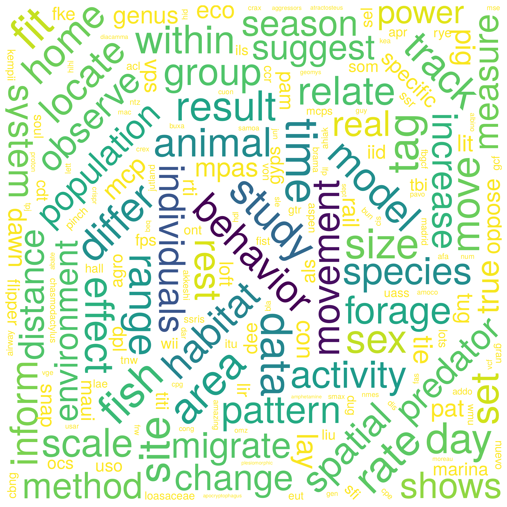
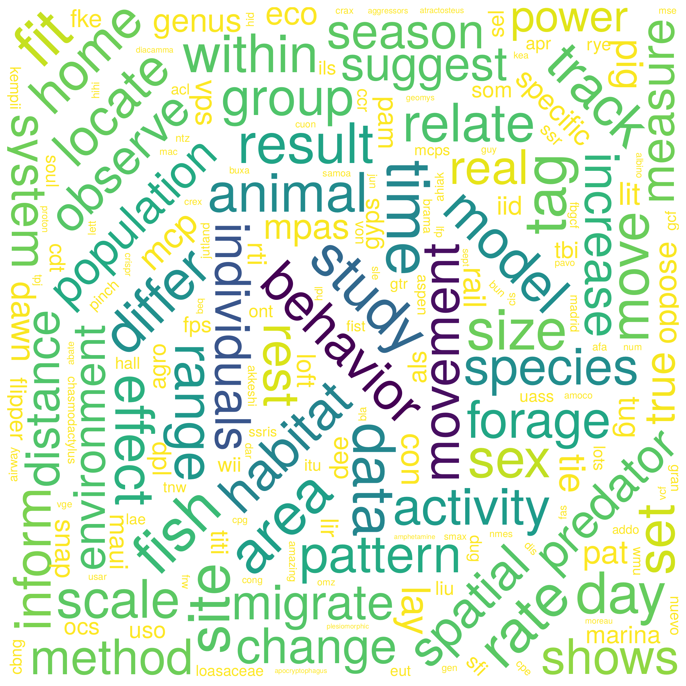

A decade of movement ecology
2020-04-22
1 Introduction
Note: This is the companion website for the manuscript “A decade of movement ecology”, from Joo et al., available as a preprint here [PASTE LINK].
1.1 Abstract of the manuscript
Wait for it!

2020-04-22
Note: This is the companion website for the manuscript “A decade of movement ecology”, from Joo et al., available as a preprint here [PASTE LINK].
Wait for it!
